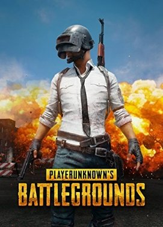

PUBG PC
The official PLAYERUNKNOWN'S BATTLEGROUNDS designed exclusively for mobile. Play free anywhere, anytime. PUBG MOBILE delivers the most intense free-to-play multiplayer action on mobile. Drop in, gear up, and compete.
PUBG PC
The official PLAYERUNKNOWN'S BATTLEGROUNDS designed exclusively for mobile. Play free anywhere, anytime. PUBG MOBILE delivers the most intense free-to-play multiplayer action on mobile. Drop in, gear up, and compete.

GTA V
It is an action-adventure game played from either a third-person or first-person perspective. Players complete missions—linear scenarios with set objectives—to progress through the story. Outside of the missions, players may freely roam the open world.

Watch Dogs 2
is a series of action-adventure games developed and published by Ubisoft. It spans three games: Watch Dogs, Watch Dogs 2 and Watch Dogs: Legion. Gameplay focuses on an open world where the player can complete missions to progress an overall story, as well as engage in various side activities.

Prototype 2
open world action-adventure video game. ... The story is one of revenge, as Heller wants to kill Alex Mercer, protagonist of the original Prototype, after his family was killed in the outbreak of the Blacklight virus.

Just Cause 2
It is a third-person action-adventure game in which players control Rico Rodriguez, field operative of the Agency, in an effort to overthrow the island dictatorship of Panau: an open world for players to explore.